<title>Mandala Stencil Studio</title>
<meta name="claude:viewport-fit-sides" content="cover">
<link rel="preconnect" href="https://fonts.googleapis.com">
<link rel="preconnect" href="https://fonts.gstatic.com" crossorigin>
<link rel="stylesheet" href="https://fonts.googleapis.com/css2?family=Syne:wght@600;700;800&family=Inter:wght@400;500;600&family=IBM+Plex+Mono:wght@400;500&display=swap">
<style>
/* Layout: one reading column (max 1080px) with a sticky section bar; paintings sit like canvases on a dark studio wall. */
:root {
  --bg: #eef2f2; --surface: #ffffff; --surface-2: #e3e9ea; --ink: #11191d; --muted: #55646b;
  --rule: #d2dbdd; --turq: #0e8a85; --gold: #9a6a08; --chip: #dff1ef; --chip-ink: #0b5e5a;
  --canvas: #0b0f14; --shadow: 0 1px 2px rgba(10,20,25,.08), 0 8px 24px rgba(10,20,25,.08);
  --f-display: "Syne", "Avenir Next", "Segoe UI", sans-serif;
  --f-body: "Inter", system-ui, -apple-system, "Segoe UI", sans-serif;
  --f-mono: "IBM Plex Mono", ui-monospace, "SF Mono", Menlo, monospace;
}
@media (prefers-color-scheme: dark) { :root:not([data-theme="light"]) {
  --bg: #0d1215; --surface: #151c20; --surface-2: #1b2429; --ink: #e8eef0; --muted: #98a7ad;
  --rule: #263238; --turq: #46d9d2; --gold: #f2c45a; --chip: #133432; --chip-ink: #7fe6df;
  --canvas: #0b0f14; --shadow: 0 1px 2px rgba(0,0,0,.4), 0 10px 30px rgba(0,0,0,.35); color-scheme: dark; } }
:root[data-theme="dark"] {
  --bg: #0d1215; --surface: #151c20; --surface-2: #1b2429; --ink: #e8eef0; --muted: #98a7ad;
  --rule: #263238; --turq: #46d9d2; --gold: #f2c45a; --chip: #133432; --chip-ink: #7fe6df;
  --canvas: #0b0f14; --shadow: 0 1px 2px rgba(0,0,0,.4), 0 10px 30px rgba(0,0,0,.35); color-scheme: dark; }

* { box-sizing: border-box; }
html { scroll-behavior: smooth; }
@media (prefers-reduced-motion: reduce) { html { scroll-behavior: auto; } }
body { background: var(--bg); color: var(--ink); font: 400 16px/1.6 var(--f-body); }
body::before { content: ""; position: fixed; inset: 0 0 auto; height: env(safe-area-inset-top, 0px); z-index: 10; background: var(--bg); }
.wrap { max-width: 1080px; margin: 0 auto; padding-left: max(16px, env(safe-area-inset-left, 0px)); padding-right: max(16px, env(safe-area-inset-right, 0px)); }
h1, h2, h3 { font-family: var(--f-display); text-wrap: balance; margin: 0; letter-spacing: -0.01em; }
h1 { font-size: clamp(2.2rem, 5.2vw, 3.6rem); font-weight: 800; line-height: 1.02; }
h2 { font-size: clamp(1.5rem, 3vw, 2.1rem); font-weight: 700; line-height: 1.15; }
h3 { font-size: 1.08rem; font-weight: 700; line-height: 1.3; }
p { margin: 0; max-width: 66ch; }
a { color: var(--turq); }
a:focus-visible, button:focus-visible { outline: 2px solid var(--turq); outline-offset: 2px; border-radius: 4px; }
.mono { font-family: var(--f-mono); font-size: .86em; }
.eyebrow { font: 500 .74rem/1 var(--f-mono); letter-spacing: .12em; text-transform: uppercase; color: var(--muted); }
.muted { color: var(--muted); }
img { display: block; max-width: 100%; height: auto; }

/* nav */
nav.bar { position: sticky; top: env(safe-area-inset-top, 0px); z-index: 5; background: color-mix(in srgb, var(--bg) 88%, transparent); backdrop-filter: blur(8px); border-bottom: 1px solid var(--rule); }
nav.bar .wrap { display: flex; gap: 4px 18px; align-items: center; overflow-x: auto; padding-block: 10px; scrollbar-width: none; }
nav.bar a { font: 500 .8rem/1 var(--f-mono); color: var(--muted); text-decoration: none; white-space: nowrap; padding: 6px 0; }
nav.bar a:hover { color: var(--ink); }
nav.bar .brand { font-family: var(--f-display); font-weight: 800; color: var(--ink); font-size: .95rem; margin-right: 6px; }

section { padding-block: 56px; border-bottom: 1px solid var(--rule); }
section > .wrap { display: grid; gap: 24px; }
.lede { font-size: 1.12rem; color: var(--muted); max-width: 60ch; }

/* hero */
.hero { padding-block: 40px 56px; }
.hero .wrap { display: grid; grid-template-columns: minmax(0, 1.05fr) minmax(0, 1fr); gap: 40px; align-items: center; }
.hero .copy { display: grid; gap: 18px; }
.canvas { background: var(--canvas); border-radius: 6px; box-shadow: var(--shadow); overflow: hidden; }
.facts { display: grid; grid-template-columns: repeat(3, minmax(0, 1fr)); gap: 12px; margin-top: 6px; }
.fact { border-top: 2px solid var(--turq); padding-top: 10px; }
.fact b { display: block; font: 700 1.5rem/1.1 var(--f-display); }
.fact span { font-size: .85rem; color: var(--muted); }

/* system */
.system { display: grid; grid-template-columns: minmax(0, .9fr) minmax(0, 1.1fr); gap: 32px; align-items: start; }
.principles { display: grid; gap: 16px; }
.principle { display: grid; grid-template-columns: 30px minmax(0, 1fr); gap: 12px; }
.principle .k { width: 30px; height: 30px; border-radius: 50%; border: 1.5px solid var(--turq); display: grid; place-items: center; color: var(--turq); font: 600 .8rem/1 var(--f-mono); }
.principle p { font-size: .96rem; }
.legend { display: flex; flex-wrap: wrap; gap: 8px 16px; font-size: .85rem; color: var(--muted); }
.legend i { display: inline-block; width: 10px; height: 10px; border-radius: 2px; margin-right: 6px; vertical-align: -1px; }

/* phases */
.phases { display: grid; gap: 14px; }
.phase { display: grid; grid-template-columns: 110px minmax(0, 1fr); gap: 20px; padding: 18px 20px; background: var(--surface); border: 1px solid var(--rule); border-radius: 8px; }
.phase .tag { display: grid; gap: 8px; align-content: start; }
.phase .tag b { font: 800 1.9rem/1 var(--f-display); color: var(--turq); }
.chip { display: inline-block; font: 500 .72rem/1 var(--f-mono); letter-spacing: .06em; text-transform: uppercase; padding: 5px 8px; border-radius: 999px; background: var(--chip); color: var(--chip-ink); width: max-content; }
.chip.later { background: var(--surface-2); color: var(--muted); }
.phase .body { display: grid; gap: 8px; min-width: 0; }
.phase ul { margin: 0; padding-left: 18px; display: grid; gap: 3px; font-size: .94rem; }
.phase .exit { font-size: .88rem; color: var(--muted); }

/* priority */
.order { counter-reset: o; display: grid; gap: 10px; margin: 0; padding: 0; list-style: none; }
.order li { counter-increment: o; display: grid; grid-template-columns: 44px minmax(0, 1fr); gap: 14px; align-items: start; padding: 12px 0; border-bottom: 1px dashed var(--rule); }
.order li::before { content: counter(o); font: 800 1.4rem/1 var(--f-display); color: var(--gold); padding-top: 2px; }
.order li p { font-size: .95rem; }

/* parts */
.parts { display: grid; grid-template-columns: repeat(3, minmax(0, 1fr)); gap: 14px; }
.part { background: var(--surface); border: 1px solid var(--rule); border-radius: 8px; padding: 14px; display: grid; grid-template-rows: 150px auto; gap: 12px; }
.part .pic { display: grid; place-items: center; background: var(--surface-2); border-radius: 6px; padding: 10px; overflow: hidden; }
.part .pic img { max-height: 130px; width: auto; }
.part .meta { display: grid; gap: 6px; align-content: start; }
.part .id { display: flex; gap: 8px; align-items: baseline; flex-wrap: wrap; }
.part .id code { font: 600 .82rem/1 var(--f-mono); color: var(--turq); }
.part p { font-size: .88rem; color: var(--muted); }
.part dl { display: grid; grid-template-columns: auto minmax(0, 1fr); gap: 2px 10px; margin: 4px 0 0; font-size: .8rem; }
.part dt { color: var(--muted); font-family: var(--f-mono); }
.part dd { margin: 0; font-family: var(--f-mono); font-variant-numeric: tabular-nums; }

/* paintings */
.paintings { display: grid; grid-template-columns: repeat(3, minmax(0, 1fr)); gap: 18px; }
.painting { display: grid; gap: 10px; }
.painting p { font-size: .9rem; color: var(--muted); }
.swatches { display: flex; gap: 6px; }
.swatches i { width: 18px; height: 18px; border-radius: 50%; border: 1px solid var(--rule); }

/* steps */
.steps { display: grid; grid-template-columns: repeat(3, minmax(0, 1fr)); gap: 18px; counter-reset: s; }
.step { display: grid; gap: 10px; align-content: start; counter-increment: s; }
.step h3::before { content: counter(s) "  "; color: var(--gold); font-family: var(--f-display); }
.step ul { margin: 0; padding-left: 18px; display: grid; gap: 3px; font-size: .9rem; }
.step .note { font-size: .82rem; color: var(--muted); }

/* rules */
.rules { display: grid; grid-template-columns: repeat(2, minmax(0, 1fr)); gap: 12px 32px; }
.rule { padding: 12px 0; border-top: 1px solid var(--rule); display: grid; gap: 4px; }
.rule b { font-family: var(--f-display); font-size: 1rem; }
.rule p { font-size: .93rem; color: var(--muted); }

/* calibrate */
.calib { display: grid; grid-template-columns: minmax(0, 1fr) minmax(0, 1fr); gap: 32px; align-items: start; }
.calib .card { background: var(--surface-2); border-radius: 8px; padding: 16px; }
pre { margin: 0; overflow-x: auto; background: var(--surface); border: 1px solid var(--rule); border-radius: 6px; padding: 12px 14px; font: 400 .84rem/1.5 var(--f-mono); }
.tbl { overflow-x: auto; }
table { border-collapse: collapse; width: 100%; font-size: .9rem; }
th, td { text-align: left; padding: 8px 10px; border-bottom: 1px solid var(--rule); vertical-align: top; }
th { font: 500 .74rem/1.2 var(--f-mono); letter-spacing: .06em; text-transform: uppercase; color: var(--muted); }
td.num { font-family: var(--f-mono); font-variant-numeric: tabular-nums; white-space: nowrap; }

.two { display: grid; grid-template-columns: minmax(0, 1fr) minmax(0, 1fr); gap: 28px; }
.files li { font-family: var(--f-mono); font-size: .84rem; }
footer { padding-block: 32px 48px; color: var(--muted); font-size: .85rem; }

@media (max-width: 900px) {
  .parts, .paintings, .steps { grid-template-columns: repeat(2, minmax(0, 1fr)); }
}
@media (max-width: 760px) {
  .hero .wrap, .system, .calib, .two, .rules { grid-template-columns: minmax(0, 1fr); }
  .phase { grid-template-columns: minmax(0, 1fr); gap: 10px; }
  .phase .tag { grid-auto-flow: column; justify-content: start; align-items: center; gap: 12px; }
}
@media (max-width: 520px) {
  .parts, .paintings, .steps { grid-template-columns: minmax(0, 1fr); }
  .facts { grid-template-columns: repeat(3, minmax(0, 1fr)); gap: 8px; }
  .fact b { font-size: 1.2rem; }
}
</style>

<nav class="bar" aria-label="Sections">
  <div class="wrap">
    <span class="brand">Stencil Studio</span>
    <a href="#system">System</a>
    <a href="#phases">Phases</a>
    <a href="#first">Print order</a>
    <a href="#parts">Kit 01 parts</a>
    <a href="#paintings">Paintings</a>
    <a href="#steps">Step by step</a>
    <a href="#rules">Alignment rules</a>
    <a href="#calibrate">Fit Card</a>
    <a href="#print">Print settings</a>
    <a href="#kit02">Kit 02 · 30 cm</a>
  </div>
</nav>

<header class="hero">
  <div class="wrap">
    <div class="copy">
      <span class="eyebrow">Sacred geometry · acrylic marker · 3D printed</span>
      <h1>Mandala Stencil Studio</h1>
      <p class="lede">A stencil system that lets you paint a precise sacred-geometry mandala with acrylic markers, with no compass and no pencil drafting. Everything clicks onto one hub, so every line and every dot lands where it should.</p>
      <p>Kit 01, <b>Seed Bloom</b>, is the first full kit: a Flower of Life core, a dotted ring, eight sunburst domes, eight petals and corner webs on a 20 × 20 cm (or 8 × 8 in) canvas. Kit 02, <a href="#kit02"><b>Turquoise Bloom</b></a>, grows it to 30 × 30 cm with eight more parts.</p>
      <div class="facts">
        <div class="fact"><b>9</b><span>printed parts, about 82 g of PLA</span></div>
        <div class="fact"><b>~2 h</b><span>to paint, plus short drying pauses</span></div>
        <div class="fact"><b>640</b><span>dots, every one placed by a hole</span></div>
      </div>
    </div>
    <figure class="canvas" style="margin:0">
      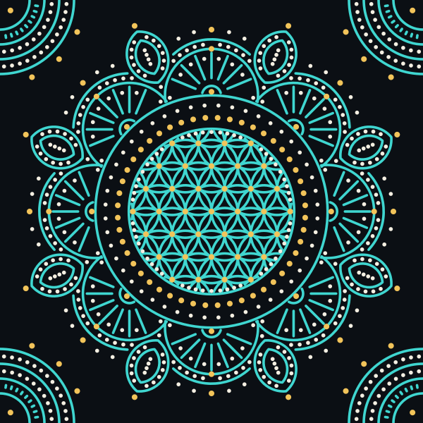
    </figure>
  </div>
</header>

<section id="system">
  <div class="wrap">
    <span class="eyebrow">How it works</span>
    <h2>One hub, and every stencil clicks onto it</h2>
    <div class="system">
      <figure class="canvas" style="margin:0">
        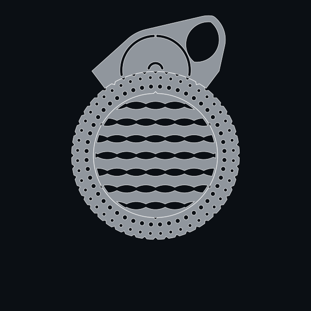
      </figure>
      <div class="principles">
        <div class="principle"><span class="k">H</span><div><h3>The hub is the anchor</h3><p>A 108 mm ring sits at the canvas centre, held by a rice grain of removable putty in each of the three pockets underneath. It has 48 notches on the outside (one every 7.5°) and 6 on the inside. Wedge plates hook two teeth into the outside notches. Inserts drop into the middle and key into the inside notches. The hub never moves until the painting is done.</p></div></div>
        <div class="principle"><span class="k">48</span><div><h3>48 notches = any symmetry</h3><p>7.5° steps divide evenly into 6, 8, 12, 16, 24 and 48 repeats. Kit 01 uses 8-fold for the wedges and 6-fold for the Flower of Life. Later kits reuse the same hub.</p></div></div>
        <div class="principle"><span class="k">3</span><div><h3>Three kinds of opening</h3><p><b>Channels</b> are narrow slots the marker tip glides along. <b>Openings</b> are shapes you trace around the inside wall. <b>Dot holes</b> take the tip straight down. Every opening is offset by the tip radius, so the paint lands on the true geometry.</p></div></div>
        <div class="principle"><span class="k">•</span><div><h3>Bridges hide under dots</h3><p>A closed curve would make its middle fall out, so the stencil keeps a 1 mm bridge in it. Every bridge sits exactly where the dot plate later puts a dot, so no gap shows.</p></div></div>
        <div class="principle"><span class="k">1·3</span><div><h3>Odd positions, then even</h3><p>Go 1-3-5-7, then 2-4-6-8. Neighbouring placements overlap a little, so skipping one gives the paint a few minutes to dry before the plate touches that area again.</p></div></div>
        <div class="legend"><span><i style="background:#cfd5dc"></i>printed part</span><span><i style="background:#3fd6d0"></i>line colour</span><span><i style="background:#f2c45a"></i>big dots</span><span><i style="background:#f4efe2"></i>small dots</span></div>
      </div>
    </div>
  </div>
</section>

<section id="phases">
  <div class="wrap">
    <span class="eyebrow">The long project</span>
    <h2>Five phases from first test print to a kit you can sell</h2>
    <p class="lede">Each phase ends with a painting and a clear test before the next one starts. Phases 0 and 1 are built: the STL files are ready. Phases 2 to 4 are planned on the same hub, so nothing you print now becomes obsolete.</p>
    <div class="phases">
      <article class="phase"><div class="tag"><b>0</b><span class="chip">Ready to print</span></div><div class="body">
        <h3>Calibrate: one evening</h3>
        <ul><li>Print the Fit Card and test each marker you own in its channels and dot holes.</li><li>Write down your “marker profile”: channel width, small-dot hole, big-dot hole.</li><li>Practise gliding, tracing and dotting on black card. Try the bridge-and-dot trick on the arc.</li><li>If your numbers differ from the defaults, regenerate the kit with one command.</li></ul>
        <p class="exit">Done when: your fine marker glides with no wobble and no catching, and your dots come out round.</p></div></article>
      <article class="phase"><div class="tag"><b>1</b><span class="chip">Ready to print</span></div><div class="body">
        <h3>Core system + Kit 01 “Seed Bloom” (20 cm)</h3>
        <ul><li>Hub, Centre Jig, Flower of Life line and dot inserts, wedge plates A, B and D, corner plate K.</li><li>Paint Seed Bloom, then a second one in another palette or with fewer plates.</li><li>Note the time for each step, any smudges and any misaligned joins.</li></ul>
        <p class="exit">Done when: two finished paintings, joins under 0.5 mm, no smudges, under 2.5 hours each.</p></div></article>
      <article class="phase"><div class="tag"><b>2</b><span class="chip">Ready to print</span></div><div class="body">
        <h3>Kit 02 “Turquoise Bloom” (30 cm / 12 in), the dense hero piece</h3>
        <ul><li>Reuses the hub, inserts and plates A, B and D in the middle.</li><li>Eight new parts out to 148 mm: ring C2 with border dots, rainbow fans, great teardrop petals on the axes, star circles with star fields on the diagonals, large corner fans, and a 30 cm jig.</li><li>About 1,700 dots, all placed by holes.</li></ul>
        <p class="exit">Done when: the 30 cm painting reads as dense as the reference and the outer plates still fit a 180 mm print bed.</p></div></article>
      <article class="phase"><div class="tag"><b>3</b><span class="chip later">Later</span></div><div class="body">
        <h3>Library: mix-and-match cores and rings</h3>
        <ul><li>New inserts: Seed of Life, Metatron’s Cube, Sri Yantra-style triangles, Merkaba star, Egg of Life.</li><li>New wedge families: 6-fold, 12-fold and 16-fold rings that click onto the same hub.</li><li>A recipe book: 6 to 10 paintings built from different combinations of the same parts.</li></ul>
        <p class="exit">Done when: any core plus any two rings makes a balanced mandala.</p></div></article>
      <article class="phase"><div class="tag"><b>4</b><span class="chip later">Later</span></div><div class="body">
        <h3>Kits for other people</h3>
        <ul><li>Number every part, make a printed instruction card per kit, add a QR code to a short video.</li><li>Durability: 50-painting wear test in PETG; check tolerances on 3 or 4 printer brands.</li><li>Have 3 to 5 beginners paint with no help. Fix whatever they get stuck on.</li><li>Bill of materials, packaging, pricing, and a workshop format.</li></ul>
        <p class="exit">Done when: a beginner finishes a kit painting with only the card.</p></div></article>
    </div>
  </div>
</section>

<section id="first">
  <div class="wrap">
    <span class="eyebrow">Which stencils first</span>
    <h2>Print in this order</h2>
    <p class="lede">Each step teaches one skill and gives you something to paint before the next print finishes.</p>
    <ol class="order">
      <li><div><h3>T0 Fit Card</h3><p>Everything depends on how your markers fit. Twenty minutes of testing here saves reprinting the whole kit.</p></div></li>
      <li><div><h3>H1 Hub + J20 Centre Jig</h3><p>The backbone. Without the hub nothing else registers. The jig puts it in the centre in a few seconds.</p></div></li>
      <li><div><h3>F1 + F2 Flower of Life inserts</h3><p>Teach tracing and dotting. Hub + F1 + F2 already make a finished small piece, so you can paint while the plates print.</p></div></li>
      <li><div><h3>A1 → B1 → D1 wedge plates</h3><p>The layered method: A is structure, B is detail, D is dots. Print A first and paint it before printing B. You will learn the click-in alignment on the simplest plate.</p></div></li>
      <li><div><h3>K1 Corner plate</h3><p>Finishes a square canvas. It hooks onto the canvas corner, so it needs no hub.</p></div></li>
    </ol>
  </div>
</section>

<section id="parts">
  <div class="wrap">
    <span class="eyebrow">Kit 01 · 9 parts</span>
    <h2>The parts and what each one draws</h2>
    <p class="lede">All plates are 2 mm thick, print flat with no supports, and are drawn here from the marker side. Print times are approximate for a typical printer at 0.2 mm layers.</p>
    <div class="parts">
      <article class="part"><div class="pic">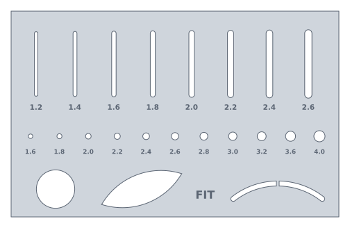</div><div class="meta"><div class="id"><code>T0</code><h3>Fit Card</h3></div><p>Channels 1.2–2.6 mm, dot holes 1.6–4.0 mm, a circle and petal to trace, an arc with a bridge.</p><dl><dt>size</dt><dd>118 × 74 mm</dd><dt>print</dt><dd>~50 min · 19 g</dd></dl></div></article>
      <article class="part"><div class="pic">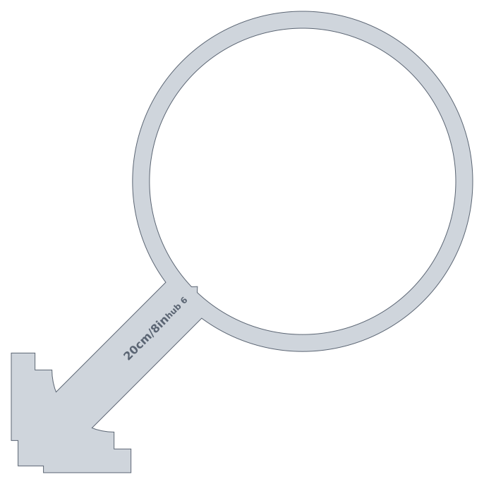</div><div class="meta"><div class="id"><code>J20</code><h3>Centre Jig</h3></div><p>Lips hook a canvas corner. The ring holds the hub at the exact centre with number 6 on its tooth. Fits 20 cm and 8 in canvases.</p><dl><dt>size</dt><dd>163 × 163 mm</dd><dt>print</dt><dd>~50 min · 16 g · lips up</dd></dl></div></article>
      <article class="part"><div class="pic">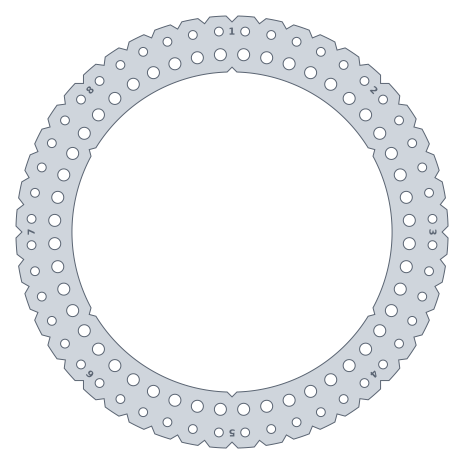</div><div class="meta"><div class="id"><code>H1</code><h3>Hub</h3></div><p>The anchor. Draws two dot rings (48 big, 48 small). Its inner edge and outer edge are traced for the two main circles.</p><dl><dt>size</dt><dd>Ø 108 mm</dd><dt>print</dt><dd>~45 min · 9 g</dd></dl></div></article>
      <article class="part"><div class="pic">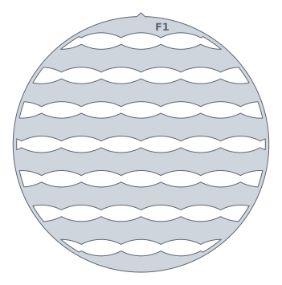</div><div class="meta"><div class="id"><code>F1</code><h3>Flower of Life · lines</h3></div><p>Seven bead-chain openings. Trace them at 3 consecutive inner notches and the full lens field appears.</p><dl><dt>used</dt><dd>3 turns</dd><dt>print</dt><dd>~35 min · 8 g</dd></dl></div></article>
      <article class="part"><div class="pic">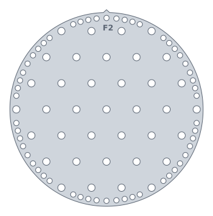</div><div class="meta"><div class="id"><code>F2</code><h3>Flower of Life · dots</h3></div><p>37 big dots on every lattice point and 54 small dots where the arcs meet the boundary circle.</p><dl><dt>used</dt><dd>1 time</dd><dt>print</dt><dd>~40 min · 11 g</dd></dl></div></article>
      <article class="part"><div class="pic">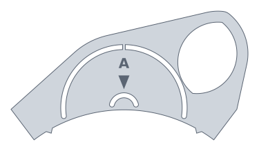</div><div class="meta"><div class="id"><code>A1</code><h3>Plate A · structure</h3></div><p>Dome arc (channel with a bridge at the top), little sun arc, petal outline (opening).</p><dl><dt>used</dt><dd>8 positions</dd><dt>print</dt><dd>~25 min · 4.5 g</dd></dl></div></article>
      <article class="part"><div class="pic">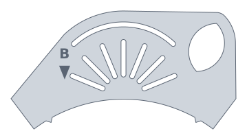</div><div class="meta"><div class="id"><code>B1</code><h3>Plate B · detail</h3></div><p>Seven sunburst rays, the echo arc outside the dome, and the inner petal.</p><dl><dt>used</dt><dd>8 positions</dd><dt>print</dt><dd>~25 min · 5 g</dd></dl></div></article>
      <article class="part"><div class="pic">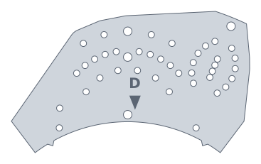</div><div class="meta"><div class="id"><code>D1</code><h3>Plate D · dots</h3></div><p>43 holes: dome trail, petal band, ray tips, crown, petal heart, and the dots that cover the bridges.</p><dl><dt>used</dt><dd>8 positions</dd><dt>print</dt><dd>~30 min · 7 g</dd></dl></div></article>
      <article class="part"><div class="pic">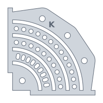</div><div class="meta"><div class="id"><code>K1</code><h3>Corner web</h3></div><p>Four quarter arcs, nine ladder ticks and 27 dots. Two lips hook onto the canvas corner.</p><dl><dt>used</dt><dd>4 corners</dd><dt>print</dt><dd>~20 min · 3.5 g · lips up</dd></dl></div></article>
    </div>
  </div>
</section>

<section id="paintings">
  <div class="wrap">
    <span class="eyebrow">Paintings from Kit 01</span>
    <h2>Three paintings, one set of stencils</h2>
    <p class="lede">The colour rule is simple: lines in colour 1, big holes in colour 3, small holes in colour 2. Change the colours or leave out a plate and you get a different painting.</p>
    <div class="paintings">
      <figure class="painting" style="margin:0"><div class="canvas"></div><div class="swatches"><i style="background:#0b0f14"></i><i style="background:#3fd6d0"></i><i style="background:#f4efe2"></i><i style="background:#f2c45a"></i></div><h3>01 · Seed Bloom, Turquoise</h3><p>Everything: F1, circles, A, B, hub dots, F2, D, K. Black canvas, turquoise lines, cream small dots, gold big dots. About 2 hours.</p></figure>
      <figure class="painting" style="margin:0"><div class="canvas">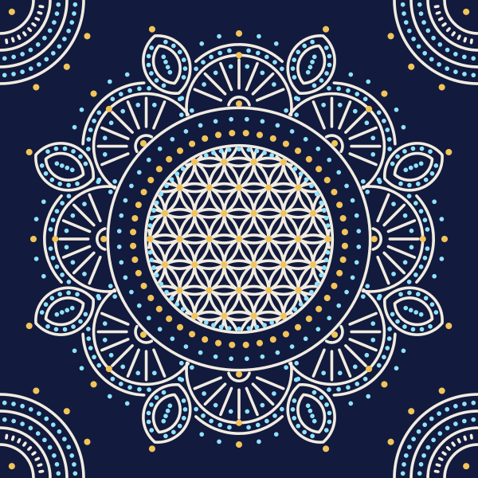</div><div class="swatches"><i style="background:#121a3d"></i><i style="background:#f1ece0"></i><i style="background:#8fe3ff"></i><i style="background:#f2c45a"></i></div><h3>02 · Seed Bloom, Moonlight</h3><p>Same plates, different palette: navy canvas, cream lines, sky-blue small dots, gold big dots.</p></figure>
      <figure class="painting" style="margin:0"><div class="canvas">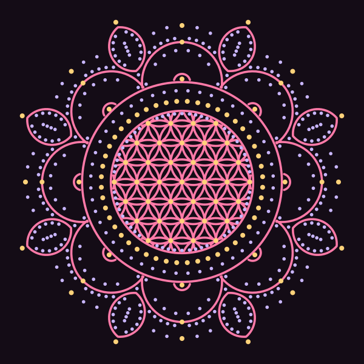</div><div class="swatches"><i style="background:#140c16"></i><i style="background:#ff7aa8"></i><i style="background:#c9b6ff"></i><i style="background:#ffd27a"></i></div><h3>03 · Lotus, Rose</h3><p>Leave out plate B and the corners for a lighter, airier piece in about an hour. A good first painting.</p></figure>
    </div>
  </div>
</section>

<section id="steps">
  <div class="wrap">
    <span class="eyebrow">Painting Seed Bloom</span>
    <h2>Step by step</h2>
    <p class="lede">You need: a 20 × 20 cm canvas painted black and fully dry, a fine marker for lines (PC-3M class), a fine marker for small dots, a medium marker for big dots (PC-5M class), removable poster putty, scrap paper and a paper towel.</p>
    <div class="steps">
      <div class="step"><div class="canvas">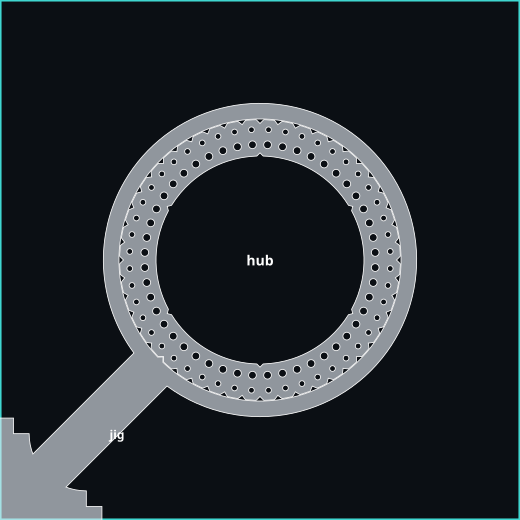</div><h3>Centre the hub</h3><ul><li>Press a rice grain of putty into each of the 3 pockets under the hub.</li><li>Hook the jig’s lips over a canvas corner.</li><li>Drop the hub into the jig ring with number 6 on the jig’s tooth. Press it down.</li><li>Lift the jig straight up.</li></ul></div>
      <div class="step"><div class="canvas">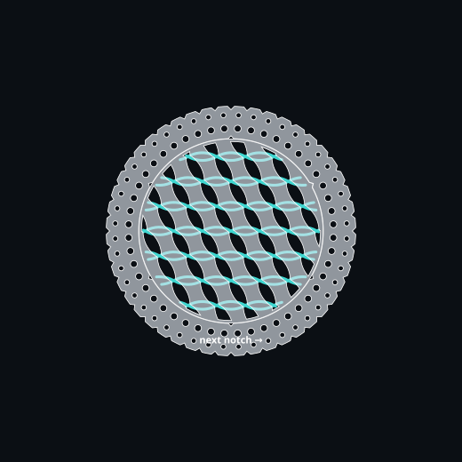</div><h3>Flower of Life: 3 turns</h3><ul><li>Drop F1 into the hub, ear in any inner notch.</li><li>Run the tip along the top wall of every bead chain, then along the bottom wall.</li><li>Lift, move the ear one notch clockwise, trace again. Repeat once more.</li></ul><p class="note">Trace only the curved walls. Skip the short flat ends at the rim.</p></div>
      <div class="step"><div class="canvas">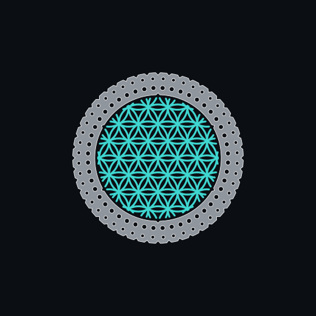</div><h3>Two circles from the hub</h3><ul><li>Remove F1. Trace once around the inside edge of the hub: that is the Flower of Life border.</li><li>Trace once around the outside edge of the hub.</li><li>Keep the marker upright and the tip touching the wall.</li></ul></div>
      <div class="step"><div class="canvas">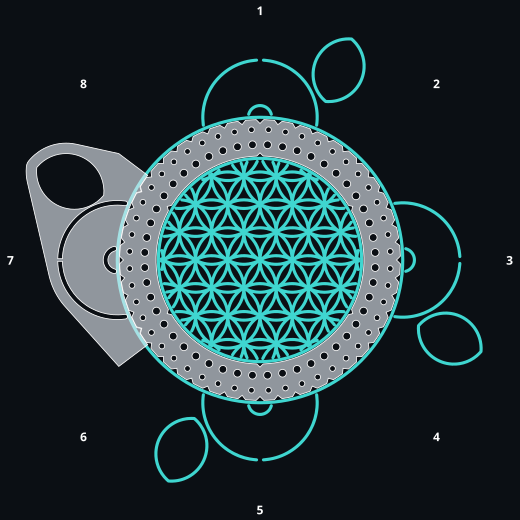</div><h3>Plate A: 8 positions</h3><ul><li>Point the ▼ at hub number 1 and slide the plate in until both teeth click into notches.</li><li>Glide the dome channel and sun arc. Trace inside the petal.</li><li>Go 1, 3, 5, 7, then 2, 4, 6, 8.</li></ul></div>
      <div class="step"><div class="canvas">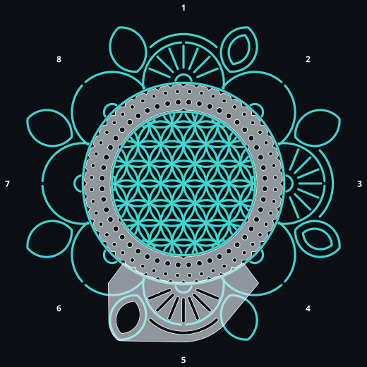</div><h3>Plate B: 8 positions</h3><ul><li>Same click-in and the same order.</li><li>Glide the 7 rays and the echo arc. Trace inside the small petal.</li><li>Wait about 10 minutes before you start the dots.</li></ul></div>
      <div class="step"><div class="canvas">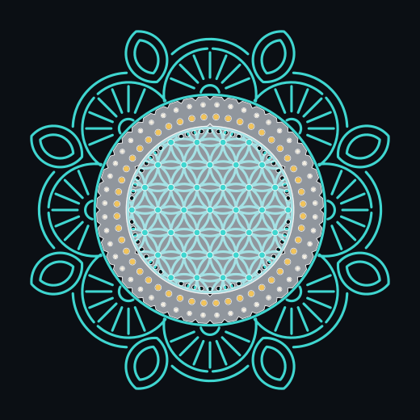</div><h3>Dots in the centre</h3><ul><li>Hub: big marker in the inner row, small marker in the outer row.</li><li>Drop F2 into the hub. Big holes, then small holes.</li><li>Tip straight down, hold 1 second, lift straight up.</li></ul></div>
      <div class="step"><div class="canvas">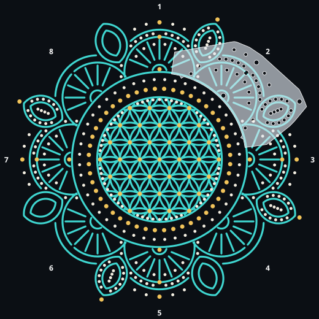</div><h3>Plate D: 8 positions</h3><ul><li>Click in like A and B.</li><li>Big holes first (they cover the bridges), then small holes.</li><li>Same 1-3-5-7, 2-4-6-8 order.</li></ul></div>
      <div class="step"><div class="canvas">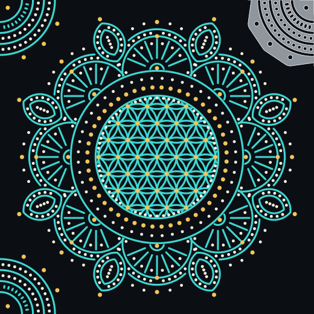</div><h3>Corners</h3><ul><li>Hook K1’s two lips onto a corner, both lips against the canvas sides.</li><li>Glide the arcs and ticks, then the dots.</li><li>Any order: the four corners never overlap.</li></ul></div>
      <div class="step"><div class="canvas">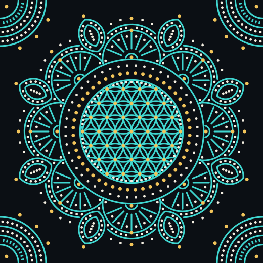</div><h3>Finish</h3><ul><li>Peel the hub off slowly and roll away any putty.</li><li>Touch up any tiny gap with the fine marker.</li><li>Let it cure for 24 hours, then use a spray varnish (brushing can smear marker paint).</li></ul></div>
    </div>
  </div>
</section>

<section id="rules">
  <div class="wrap">
    <span class="eyebrow">Alignment and application</span>
    <h2>The rules that make it work</h2>
    <div class="rules">
      <div class="rule"><b>Never move the hub</b><p>Every placement refers to it. If it shifts, stop, press it back with the jig, and check it against a line you already drew.</p></div>
      <div class="rule"><b>Click, don’t eyeball</b><p>Wedge plates: ▼ toward the hub number, slide in until both teeth sit in notches. Half a notch off, the teeth hit the hub and the plate won’t lie flat.</p></div>
      <div class="rule"><b>Hold flat, away from openings</b><p>Press with two flat fingertips on solid plastic. Pressing near a channel can lift the far side.</p></div>
      <div class="rule"><b>Glide channels, trace openings</b><p>In a channel, just move the tip along. In an opening, keep light contact with the inside wall all the way round.</p></div>
      <div class="rule"><b>Gaps at bridges are planned</b><p>Every bridge gap gets a big dot from plate D or F2. Don’t fill them freehand.</p></div>
      <div class="rule"><b>Odd, then even</b><p>1-3-5-7 then 2-4-6-8. Between layers (A → B → dots), wait until a test line on scrap is dry to the touch.</p></div>
      <div class="rule"><b>Prime on scrap, not on canvas</b><p>Pump the marker on paper until it flows evenly. A flooded tip leaves a blob that runs under the plate.</p></div>
      <div class="rule"><b>Lift straight up, wipe the back</b><p>Never slide a plate across wet paint. Wipe the underside with a damp towel when you change colour.</p></div>
      <div class="rule"><b>Big holes = colour 3, small = colour 2</b><p>The hole size tells you which marker to use. A big marker won’t fit a small hole.</p></div>
      <div class="rule"><b>Labels face you</b><p>Every part is used with its engraved label on top. The canvas side has a small undercut around each opening so the plastic never touches a fresh line.</p></div>
    </div>
  </div>
</section>

<section id="calibrate">
  <div class="wrap">
    <span class="eyebrow">Phase 0</span>
    <h2>Calibrate with the Fit Card</h2>
    <div class="calib">
      <div class="card"></div>
      <div style="display:grid; gap:14px; min-width:0">
        <p><b>Channels (top row, 1.2 to 2.6 mm).</b> Find the narrowest channel your fine line marker glides through without catching or wobbling. That number is your <span class="mono">--line</span>.</p>
        <p><b>Dot holes (middle row, 1.6 to 4.0 mm).</b> The smallest hole the fine tip drops into fully is <span class="mono">--dot-s</span>. Do the same with the medium marker for <span class="mono">--dot-m</span>.</p>
        <p><b>Circle and petal.</b> Trace them on black card. The lines should be smooth and land 1 tip-radius inside the wall.</p>
        <p><b>Arc with a bridge.</b> Draw the arc, then put one big dot on the gap. That is how every bridge in the kit is hidden.</p>
        <p>The kit is built for 1.8 / 2.2 / 3.0 mm. If yours differ, regenerate:</p>
        <pre>python3 make_kit.py --line 2.0 --dot-s 2.4 --dot-m 3.2</pre>
      </div>
    </div>
  </div>
</section>

<section id="print">
  <div class="wrap">
    <span class="eyebrow">Printing</span>
    <h2>Print settings</h2>
    <div class="two">
      <div class="tbl"><table>
        <thead><tr><th>Setting</th><th>Value</th></tr></thead>
        <tbody>
          <tr><td>Material</td><td>PLA for a first run, PETG for parts you will use many times</td></tr>
          <tr><td>Nozzle / layer</td><td class="num">0.4 mm / 0.2 mm</td></tr>
          <tr><td>Infill</td><td>100% (parts are only 2 mm thick)</td></tr>
          <tr><td>Supports / brim</td><td>None / off</td></tr>
          <tr><td>Bed</td><td>Smooth PEI or glass gives the best surface</td></tr>
          <tr><td>Elephant foot compensation</td><td class="num">0.1–0.15 mm</td></tr>
          <tr><td>Orientation</td><td>As in the files. J20 and K1 print lips up; flip them over to use.</td></tr>
        </tbody>
      </table></div>
      <div style="display:grid; gap:12px; align-content:start">
        <p>Kit 01: about <b>66 cm³ (82 g)</b> and roughly <b>5 hours</b> on a typical printer. Kit 02 adds about <b>70 cm³ (87 g)</b> and <b>6 hours</b>.</p>
        <p>Every file was checked as a closed solid. A virtual assembly test (41 checks) confirms that every plate seats in the hub notches with zero overlap and is blocked half a notch off, that the inserts only sit at the six inner notches, that both jigs key the hub, and that no dot lands on another element’s paint except where it is meant to cover a bridge.</p>
        <p class="muted">If a plate feels tight on the hub, sand the teeth lightly. If it rocks, your printer over-extrudes: lower the flow 2–3%.</p>
      </div>
    </div>
  </div>
</section>

<section id="kit02">
  <div class="wrap">
    <span class="eyebrow">Phase 2 · Kit 02 · 30 × 30 cm / 12 × 12 in</span>
    <h2>Turquoise Bloom</h2>
    <p class="lede">The dense hero piece. Seed Bloom becomes the centre, unchanged, and eight new parts add a border ring, rainbow fans, great teardrop petals on the four axes, star circles on the diagonals, and large corner fans. All of them click onto the same hub.</p>
    <div class="paintings" style="grid-template-columns: repeat(2, minmax(0, 1fr));">
      <figure class="painting" style="margin:0"><div class="canvas">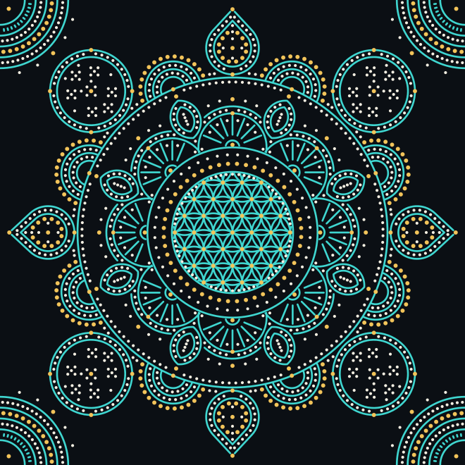</div><div class="swatches"><i style="background:#0b0f14"></i><i style="background:#3fd6d0"></i><i style="background:#f4efe2"></i><i style="background:#f2c45a"></i></div><h3>04 · Turquoise Bloom</h3><p>About 1,700 dots and 4 to 4½ hours of painting, including the Seed Bloom centre.</p></figure>
      <figure class="painting" style="margin:0"><div class="canvas">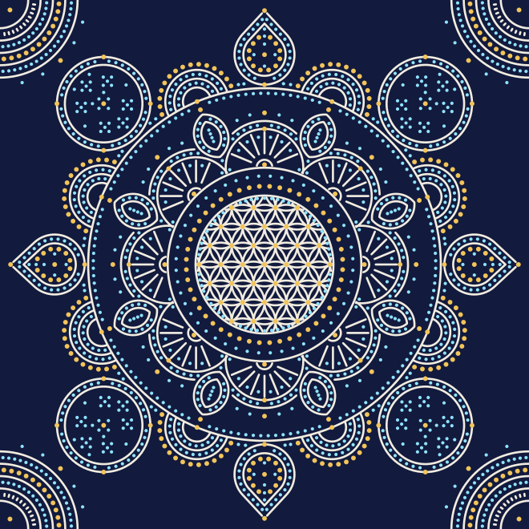</div><div class="swatches"><i style="background:#121a3d"></i><i style="background:#f1ece0"></i><i style="background:#8fe3ff"></i><i style="background:#f2c45a"></i></div><h3>05 · Turquoise Bloom, Moonlight</h3><p>Same plates on a navy canvas. Any three-colour palette works with the hole-size rule.</p></figure>
    </div>

    <h3 style="margin-top:12px">New parts (8)</h3>
    <div class="parts">
      <article class="part"><div class="pic">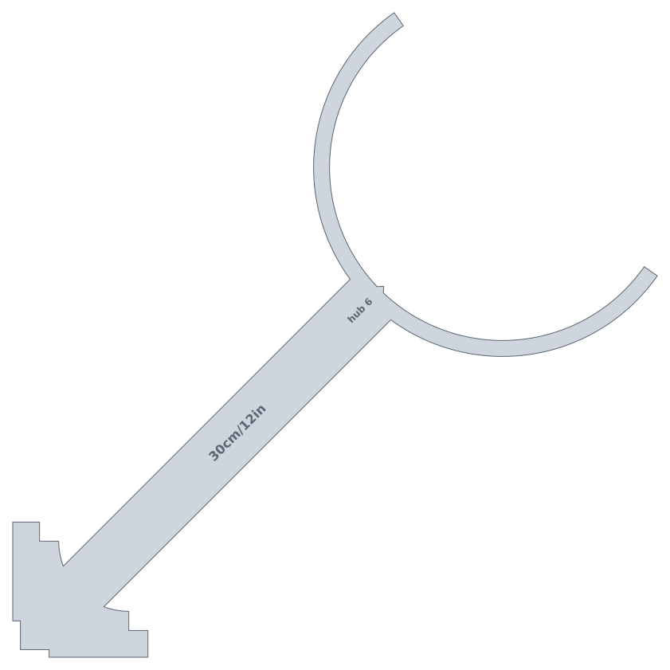</div><div class="meta"><div class="id"><code>J30</code><h3>Centre Jig 30 cm</h3></div><p>Same use as J20. The cradle is open on the far side so it fits a 210 mm print bed. Fits 30 cm and 12 in canvases.</p><dl><dt>size</dt><dd>202 × 202 mm</dd><dt>print</dt><dd>~55 min · 17 g · lips up</dd></dl></div></article>
      <article class="part"><div class="pic">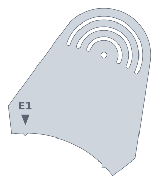</div><div class="meta"><div class="id"><code>E1</code><h3>Rainbow fans</h3></div><p>Three nested arcs standing on ring C2, plus a gold sun dot at their foot.</p><dl><dt>used</dt><dd>8 positions</dd><dt>print</dt><dd>~35 min · 8 g</dd></dl></div></article>
      <article class="part"><div class="pic">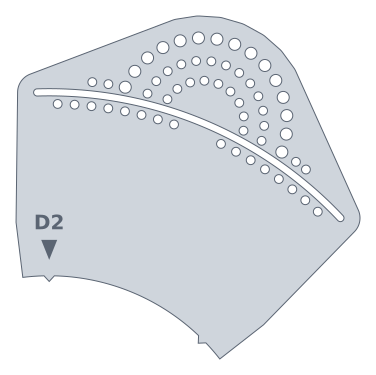</div><div class="meta"><div class="id"><code>D2</code><h3>Ring + border dots</h3></div><p>The C2 ring channel (glide it with the line marker first), fan dot rows, the gold fan crown, and border dots on both sides of C2.</p><dl><dt>used</dt><dd>8 positions</dd><dt>print</dt><dd>~45 min · 11 g</dd></dl></div></article>
      <article class="part"><div class="pic">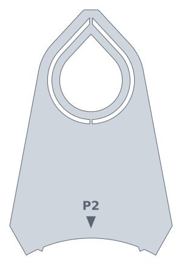</div><div class="meta"><div class="id"><code>P2</code><h3>Great petals</h3></div><p>Outer teardrop (channel, with bridges at the base and the tip) and the inner teardrop (opening).</p><dl><dt>used</dt><dd>positions 1 3 5 7</dd><dt>print</dt><dd>~40 min · 10 g</dd></dl></div></article>
      <article class="part"><div class="pic">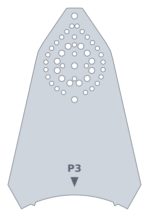</div><div class="meta"><div class="id"><code>P3</code><h3>Petal dots</h3></div><p>White band row, gold inner row, a dotted heart, and the two big dots that cover P2’s bridges.</p><dl><dt>used</dt><dd>positions 1 3 5 7</dd><dt>print</dt><dd>~40 min · 10 g</dd></dl></div></article>
      <article class="part"><div class="pic">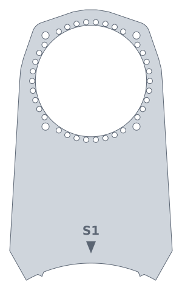</div><div class="meta"><div class="id"><code>S1</code><h3>Star circles</h3></div><p>Circle opening to trace, a white rim of dots, and four gold dots that will cover S2’s bridges.</p><dl><dt>used</dt><dd>positions 2 4 6 8</dd><dt>print</dt><dd>~45 min · 11 g</dd></dl></div></article>
      <article class="part"><div class="pic">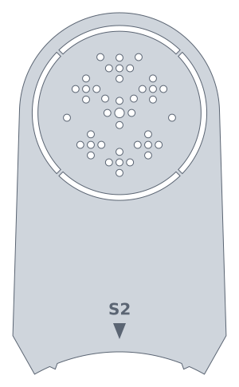</div><div class="meta"><div class="id"><code>S2</code><h3>Echo + star field</h3></div><p>The echo circle channel (four bridges) and a mirror-symmetric field of sparkles inside it.</p><dl><dt>used</dt><dd>positions 2 4 6 8</dd><dt>print</dt><dd>~55 min · 15 g</dd></dl></div></article>
      <article class="part"><div class="pic">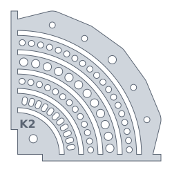</div><div class="meta"><div class="id"><code>K2</code><h3>Corner fan 30 cm</h3></div><p>Five quarter arcs, eleven ladder ticks and 50 dots. Hooks onto the canvas corner like K1.</p><dl><dt>used</dt><dd>4 corners</dd><dt>print</dt><dd>~25 min · 5 g · lips up</dd></dl></div></article>
    </div>
    <p class="muted">Reused from Kit 01, no reprint: H1, F1, F2, A1, B1, D1. The 20 cm parts J20 and K1 are not used on a 30 cm canvas. New parts: about 70 cm³ (87 g) and 6 hours of printing. The longest plate is 113 mm, so everything fits a 180 mm bed except J30 (202 mm).</p>

    <h3 style="margin-top:12px">Painting Turquoise Bloom, step by step</h3>
    <div class="steps">
      <div class="step"><div class="canvas">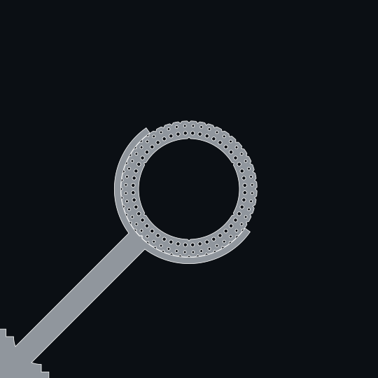</div><h3>Centre the hub with J30</h3><ul><li>Same as Kit 01: putty, jig on a corner, hub number 6 on the tooth, press, lift.</li><li>No room on your printer for J30? Measure instead: the hub’s outer edge sits 96 mm from each canvas edge (98 mm on a 12 in canvas).</li></ul></div>
      <div class="step"><div class="canvas">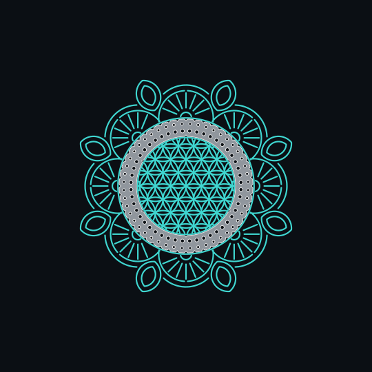</div><h3>Seed Bloom lines</h3><ul><li>F1 (3 turns), the two hub circles, plate A ×8, plate B ×8, exactly as in Kit 01.</li><li>Leave the centre dots for later so one marker does all the lines.</li></ul></div>
      <div class="step"><div class="canvas">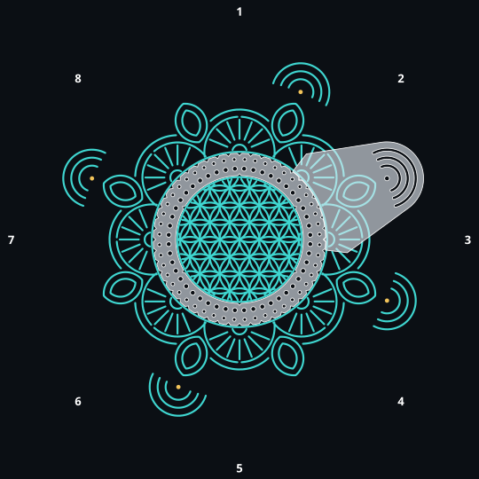</div><h3>E1: rainbow fans ×8</h3><ul><li>Click in at each hub number, 1-3-5-7 then 2-4-6-8.</li><li>Glide the three arcs down to where ring C2 will be. Dot the gold sun hole with the big marker.</li></ul></div>
      <div class="step"><div class="canvas">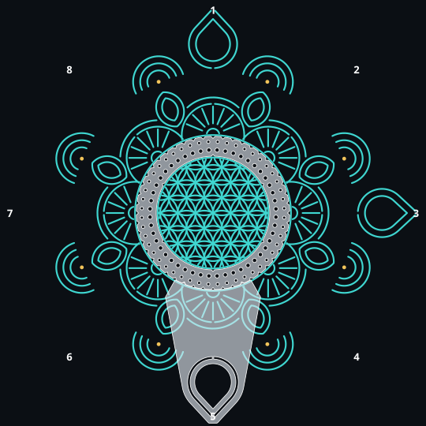</div><h3>P2: great petals ×4</h3><ul><li>Only positions 1, 3, 5, 7 (the axes).</li><li>Glide the outer teardrop channel, then trace inside the inner teardrop.</li></ul></div>
      <div class="step"><div class="canvas">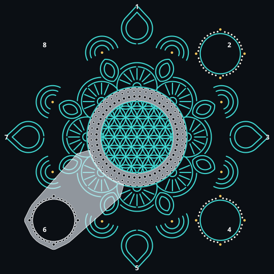</div><h3>S1: star circles ×4</h3><ul><li>Only positions 2, 4, 6, 8 (the diagonals).</li><li>Trace the circle. Then the rim: small holes white, the 4 big holes gold.</li></ul></div>
      <div class="step"><div class="canvas">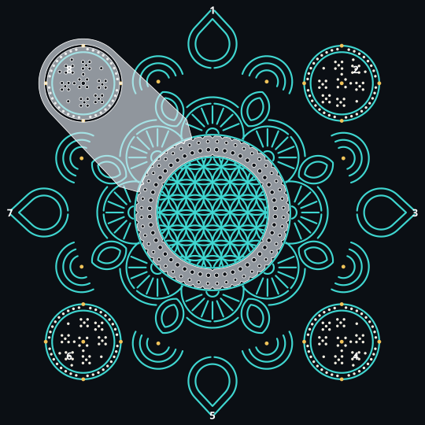</div><h3>S2: echo + stars ×4</h3><ul><li>Positions 2, 4, 6, 8 again.</li><li>Glide the echo circle. Its four gaps line up with S1’s gold dots. Then dot the star field.</li></ul></div>
      <div class="step"><div class="canvas">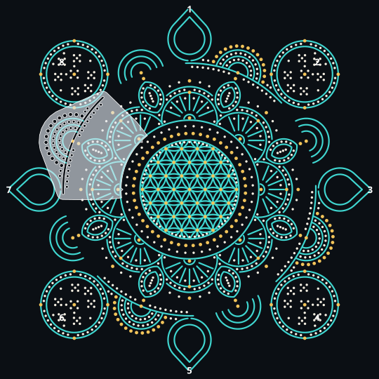</div><h3>Centre dots, then D2 ×8</h3><ul><li>Hub dots, F2 and plate D ×8 as in Kit 01.</li><li>D2 at every position: first glide ring C2 with the line marker, then big holes, then small holes.</li></ul></div>
      <div class="step"><div class="canvas">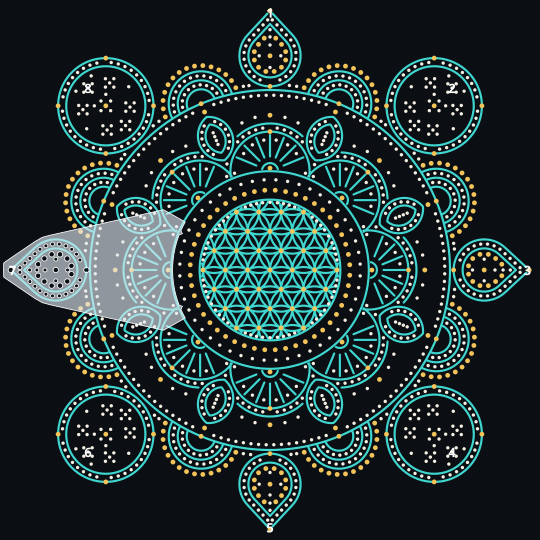</div><h3>P3: petal dots ×4</h3><ul><li>Positions 1, 3, 5, 7.</li><li>The big dots at the base and tip cover P2’s two bridges.</li></ul></div>
      <div class="step"><div class="canvas">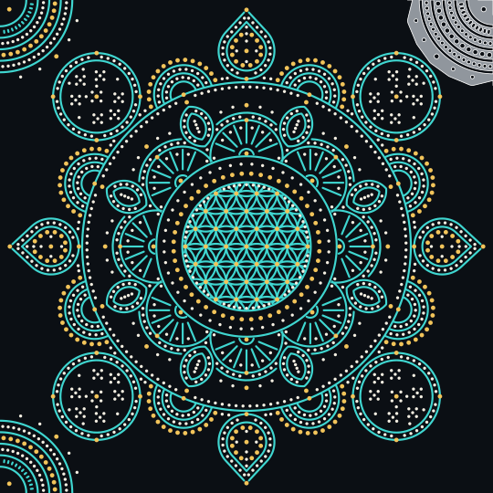</div><h3>K2: corner fans</h3><ul><li>Hook both lips onto each corner.</li><li>Arcs and ticks with the line marker, then the dots.</li></ul></div>
      <div class="step"><div class="canvas">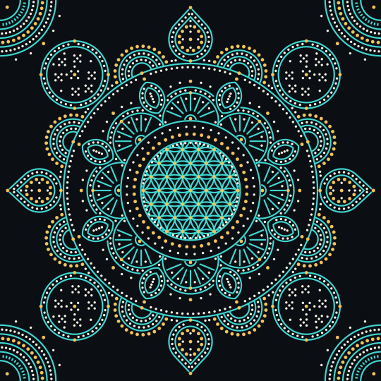</div><h3>Finish</h3><ul><li>Peel the hub off slowly, touch up gaps, cure 24 hours, then spray varnish.</li></ul></div>
    </div>
  </div>
</section>

<section>
  <div class="wrap">
    <span class="eyebrow">Files</span>
    <h2>What’s in the project folder</h2>
    <div class="two">
      <ul class="files">
        <li>stl/00_T0_fit_card.stl</li>
        <li>stl/01_J20_centre_jig_20cm_8in.stl</li>
        <li>stl/02_H1_hub.stl</li>
        <li>stl/03_F1_flower_of_life_lines.stl</li>
        <li>stl/04_F2_flower_of_life_dots.stl</li>
        <li>stl/05_A1_plate_A_domes_petals.stl</li>
        <li>stl/06_B1_plate_B_rays_inner_petals.stl</li>
        <li>stl/07_D1_plate_D_dots.stl</li>
        <li>stl/08_K1_corner_web.stl</li>
        <li>stl/10_J30_centre_jig_30cm_12in.stl</li>
        <li>stl/11_E1_plate_E_rainbow_fans.stl</li>
        <li>stl/12_D2_plate_D2_ring_border_dots.stl</li>
        <li>stl/13_P2_plate_P2_great_petals.stl</li>
        <li>stl/14_P3_plate_P3_petal_dots.stl</li>
        <li>stl/15_S1_plate_S1_star_circles.stl</li>
        <li>stl/16_S2_plate_S2_echo_star_field.stl</li>
        <li>stl/17_K2_corner_fan_30cm.stl</li>
      </ul>
      <div style="display:grid; gap:10px; align-content:start">
        <p><span class="mono">make_kit.py</span> rebuilds every STL from your marker profile and re-runs the fit check.</p>
        <p><span class="mono">design01.py</span> and <span class="mono">design02.py</span> hold the Seed Bloom and Turquoise Bloom designs: radii, petal sizes, ray count, dot spacing. Change a number, rebuild, and the plates follow.</p>
        <p><span class="mono">geom.py</span> and <span class="mono">parts.py</span> hold the stencil system: hub, notches, teeth, inserts, plates, jig.</p>
      </div>
    </div>
  </div>
</section>

<footer><div class="wrap">Mandala Stencil Studio · Kit 01 Seed Bloom · Kit 02 Turquoise Bloom · all measurements in millimetres · hub positions are numbered clockwise from the top.</div></footer>
